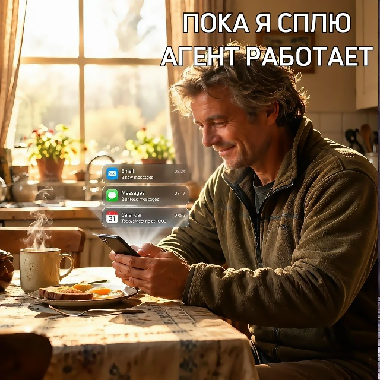

Пока я сплю, агент пишет посты

Часть 3. Бот или агент — финал
Больше полезного про нейросети — простым языком, каждый день в нашей группе ВКонтакте
Перейти во ВКонтакте →Ребята привет. В первой части мы разобрались, чем бот отличается от агента. Во второй я рассказал, как с нуля собрал своего первого бота. А сегодня — про настоящего агента, который работает на меня каждый день.
Как всё началось
Посмотрел ролик на YouTube, где показывали: посты можно поручить ИИ-агенту. Решил попробовать — и получилось.
Только в этот раз меня вёл не Gemini, а Claude. Gemini отвечал на мои скриншоты шаг за шагом: куда нажать, что делать дальше. А Claude знал наперёд, что и как нужно настроить. Где я что-то упускал — он сам дописывал и объяснял, зачем это и для чего.
Как это выглядит сейчас
Каждое утро в 7:00 агент сам ищет темы, пишет посты, проверяет факты и присылает мне на почту готовые письма с черновиками.
Могу я опубликовать их сразу? Могу. Но так не делаю. Читаю, правлю, меняю слова, которые мне не нравятся или которых нет в моём обиходе. Агент готовит — а решаю всё равно я.
В инструкции для него чётко прописано: проверять самого себя, следить, чтобы не было повторов, соблюдать структуру поста — с хэштегами и эмодзи. И главное правило, почти закон: не выдумывать того, чего нет на самом деле.
Вот это поворот
Один случай всё-таки был. Агент прислал историю, которая у меня в канале уже была, давно. Ошибся агент? Нет. Он просто не мог этого знать — правила сверяться со старыми постами у него тогда не было. Я заметил, мы вместе дописали правило, и теперь перед выбором темы он сам проверяет ленту канала и статьи на сайте.
Вывод простой: агента не настраивают раз и навсегда. Его доучивают по ходу дела — как нового сотрудника.
Что это дало мне
Времени стало больше. Раньше я искал тему, думал, как её подать, выстраивал, что за чем идёт. Теперь остаётся только редактура — а отредактировать готовое намного быстрее, чем придумать с нуля. Освободившееся время трачу на другое.
А обычному человеку агент зачем?
Ну вот подумайте сами. Бот выполняет одну команду по расписанию. Агент сам собирает сведения, принимает решение и меняет план, если что-то поменялось. Смотрите на примерах.
Кухня. Бот: в 8:00 присылает случайный рецепт. Агент: вы кидаете ему фото холодильника — он составляет меню на неделю из того, что есть, учитывает, что вы вчера ели, и присылает список покупок только того, чего не хватает.
Спорт. Бот: «тренировка в 7:00». Агент: видит в прогнозе утренний дождь — переносит пробежку на вечер. Пропустили тренировку — перестраивает нагрузку на всю неделю.
Бухгалтер. Бот: «срок отчёта 25-го». Агент: сам ищет изменения в налогах за неделю, отбирает только те, что касаются вашей работы, объясняет простыми словами и добавляет новый срок в календарь.
Запись и звонки. Бот: автоответчик «нажмите 1, чтобы записаться…» — шаг в сторону, и он вас не понимает. Агент: отвечает живым голосом, понимает обычную речь, уточняет, когда вам удобно, сверяется с расписанием мастера, записывает и присылает подтверждение. Если вопрос нестандартный — переводит на человека.
Такие голосовые помощники уже работают в банках и службах доставки. И говорят так хорошо, что отличить от человека бывает трудно. Возможно, вы уже разговаривали с агентом и даже не заметили.
Ну вот как то так. На этом серия про ботов и агентов закончена. Спасибо, что были со мной все три части.
А вам какой агент пригодился бы?